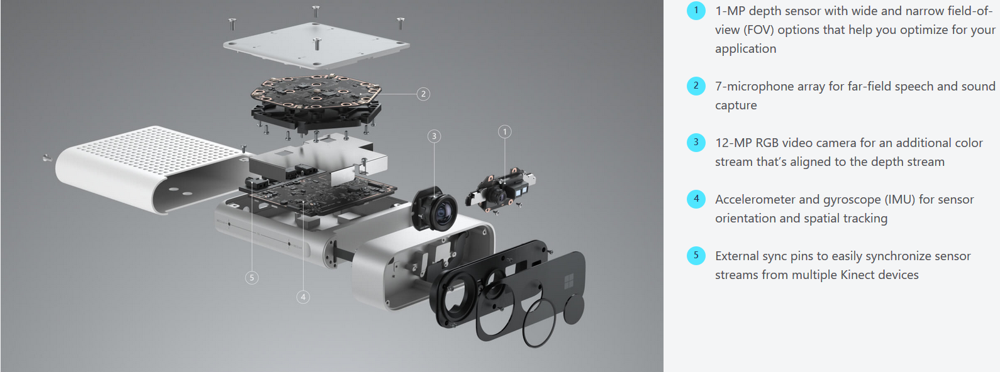

After researching similar projects online, we found several articles which have similar goals to ours. Thus, we picked up two articles we thought were most appropriate to compare with, and came up with the following reviews:
After reviewing the whole paper we found there was quite a lot of useful information in it. It was extremely applicable to us, as the researchers used the same cameras as us, to the same or similar ends.
The first part of the article is about calibration and fusion of using multiple Kinect devices at the same time. Due to the fact that the latest Kinect camera (Azure) will synchronise sensor streams from multiple Kinect devices easily, we decided not to go too deep with this part (it wasn't yet relevant to the project).
Then, the next part is about motion analysis: we found that their way of dividing whole body parts into five sub parts and analysing them separately to obtain a result posture was a clever way to do it, and we thought this would be a possible approach to take in our project as well. Even though none of us are too familiar with machine learning, we made some notes about their method to potentially use them in the later part of the project.
It was interesting to learn how one can maneuver around occlusions while performing skeletal tracking with Kinect cameras. This would be specifically helpful to us as the styles of dancing we are tracking are in pairs/couples, and we expect occlusions will happen fairly often.
In terms of their testing result, we found a couple of issues. First of all, this was set-up to just target a single dance, whereas our project encapsulates many more dances. Furthermore, the dance that is described in the paper was relatively easy to perform, thus might have been the reason why they reached reasonable accuracy.
In conclusion, the paper was a helpful insight in skeletal tracking specifically for dance with Kinect cameras, tailoring said tracking to a specific dance style, and dealing with object or human occlusions while tracking a dancer, and its findings were considered in the development of our project.
This article described ways to use Microsoft Kinect cameras for automated rehabilitation exercise evaluation. The evaluation process uses parameters that have been explicitly defined by a new parameterization method based on Labanotation[3]. Due to the huge amount of information this article includes, only a few sections of this article were utilized.
The first part introduces the basic concepts of the Kinect sensor; it goes through the way Kinect recognises joints data from cameras, and also, the accuracy problems that occur at in parallel. It contains some ideas that we agreed with after our own testing, like the difficulty of recognising some specific body movements due to joints occlusion.
The next part is about choosing suitable exercises for evaluation; even though this information is not related to our project goals, their evaluation results show us the potential challenge we might face in our projects. Some rehabilitation movements are very simple to perform for people, but can be difficult for Kinect cameras to capture, and also difficult to parameterize.
In relation to our project background, dance movements have a greater complexity and uncertainty than rehabilitation movements, which is going to make it much harder to evaluate.
The last part we were interested in was the parameterization of exercises. They specifically defined each movement by a sequence of changing joint positions and the angles between them. This system would require a lot of effort to build, and it would be difficult to add new movements. However, it provided us with some insight about how to process and combine separate joints' data into body posture. This information could be useful if we start building posture recognition function.
In conclusion, this article helped us understand different possible ways to use data gathered from the Kinect Sensors, and also identify some potential challenges we may face in our projects.
Comparison sheet between Kinect 2, iPhone X and iPhone 11 Pro
| Aspect | Kinect 2 | iPhone X | iPhone 11 Pro |
|---|---|---|---|
| Price | Approx £100 (cable + camera) | Approx £400 | Approx £1200 |
| FPS | 30 | 240 | 240 |
| Video | Kinect 2 Video | iPhone X Video | N/A |
| Time Of Flight Sensors | Yes | No | Yes |
| Built in multi-people recording | Yes | No | No |
| Kinect Azure compatibility | Yes | No | No |
| SDK licensing availability | Yes | Yes | Yes |
| Communication with the Apple Watch | No | Yes | Yes |
| Requires laptop/computer to start: | Yes | No | No |
| Requires power supply: | Yes | No | No |
Microsoft Azure Kinect DK
Experimenting with Cameras
We tested the Kinect and iPhone cameras side by side in videos to share the full experience with our partners at Arthur Murray Dance Centers.
Conclusion
We also compared the Intel Real Sense and the latest Azure Kinect cameras. The optimial solution appeared to be the Azure Kinect which will be the released in the UK soon and comes with a brand new SDK. It is also capable of synchronising multiple Kinect cameras, which would hugely improve the data accuracy and reduce our occlusion problem. However we are not able to get it in UK during the development period of this project, so we chose to use Kinect 2 camera, which has a similar system and will be compatible with the Azure Kinect.
Apart from cameras, We also researched other wearable health devices, such as smart watches and smart shoes. We all agreed that smart watches, particularly the Apple Watch, was a good choice: not only does it provide excellent health related data, like heart rate and calories burned, but it also has some advanced sensors like a gyroscope and accelerometer. These feature helped us obtain different aspects of health metrics.
In terms of smart shoes, we talked with our client and agreed that even it were a good idea to use such shoes, dancer may have specific shoes for their dances, so wasn't particularly applicable to our project.
No alternative libraries are considered for Apple Watch as the native library and the Apple Health Kit were used to give access to the sensors and health data.
We considered many library alternatives when creating the Kinect user experience:
We chose to use OpenGL instead of the Microsoft D2D library for live feed and skeletal display, because of Microsoft licensing, and how OpenGL works easily with OpenCV.
OpenCV and the FFMpeg libraries were both considered for the video saving, but ultimately, a lot of the FFMpeg library functionalities we wanted to use were deprecated,
so we opted to use OpenCV as it already played well with our use of OpenGL, and it depended on FFMpeg anyway.
Lastly, we chose Dear Imgui over Qt and many other libraries because it was very simple and light, with minimal dependencies, and it fulfilled the job we wanted it to.
Originally, we had a different algorithm planned and written for the json merging: it was meant to delete the files merged after using them to avoid merging incorrect and already used data. Ultimately, this was too complex to implement, so instead we opted to use the date as well in teh merging algorithm.